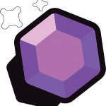
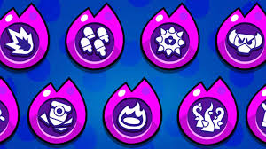

Brawl stars
Brawl Stars é um jogo mobile de tiro multijogador gratuito para celulars e tablets, que testa suas habilidades em terceira pessoa, desenvolvido e publicado pela empresa produtora de jogos Supercell . Foi lançado globalmente (exceto na China) no dia 12 de dezembro de 2018 para iOS e Android. Ele apresenta vários modos de jogo, cada um com um objetivo diferente. Os jogadores podem escolher algum brawler (personagem combatente controlado por joysticks na tela em uma partida)que você adiquire jogando
História
Ideia e origens:
Em 2014 a Supercell estava prtendendo criar um jogo battle Royole,mas depois de testes descobriram que jogar com amigos era mais divertido,então implantaram uma dinamica 3x3(o modo combate solitario era o único que tinha o sistema de battle royale) O primeiro protótipo de Brawl Stars era basicamente um jogo de fantasia, simplesmente porque os artistas da desenvolvedora Supercell conheciam bem o gênero e poderiam fazer esboços com maior agilidade.Porem um desenvolvedor chamado Fank keienberg teve a ideia de fazer um jogo com tema de espaço. Seguindo a ideia de frank criaram um que protótipo foi Chamado de Prototic Laser porem,a supercell queria um jogo único, se o laser fosse lançado nâo se destacaria muito no mundo dos jogos desse tema.Até que um outro desenvolverdor da Supercell teve a ideia de fazer o jogo com tema de faroeste,alem disso ele criou varios brawlers que temos hoje em dia.Tudo isso fez com que o jogo começase a andar. Então o segundo nome do prototico foi chamado de Gun town,porem foi mudada para Slug fast e finalmete Brawl Stars
Primeira era:pre-global
Essa era começa com lançamento oficial do jogo (14/06/2017). O jogo era em 2D, vertical,para atirar e presciso arrastar a tela e possuia apenas os modos combate , piq-gema, roubo, caça estrelas e só mais tarde na mesma era seria lançado o Fut-Brawl.O lançamento global do jogo em 12/12/2018 terminando assim a era com 21 brawlers.
Era 3D :
Essa era começa com o lançamento global do jogo em 12/12/2018 marcada pela mudança do jogo do 2D para o 3D, remodelação de alguns brawler,o jogo deixou de ser vertical e passou a ser vertical,essa era pode ser dividida em três épocas que duraram de 12/12/2018 até 9/5/2020
Època 1:novas dimensões
- O jogo e lançado globalmente, e 3D
- remodelamento de alguns brawlers
- E lançado o modo emcurralado
- acaba com o Bralw talk do verâo dos robõs em 25/06/2019.
- São lançados o:Eugênio,Rosa, Carl e Bibi
Època 2:De piratas a robos
- criação do segundo poder estrela
- foram lançados os brawlers:
Supercell
Supercell é uma desenvolvedora finlandesa de jogos eletrônicos para dispositivos móveis fundada em maio de 2010 por Ilkka Paananen e conhecida. principalmente, pelo seus jogos Brawl Stars, Clash Royale, Clash of Clans e Hay Day, que têm sucesso internacional.
Modos de jogo
Atualmente o Bralw stars tem 10 modos de jogos que mudam diariamente sendo eles: Combate Solitário, Combate Duplo, Fut-brawl, Roubo, Extermínio, Zona estratégica, basquete-brawl,duelos, Pique-Gema, Noucate.
Piq-gema:
Junte gemas que surgem da mina de gemas no centro do mapa. Ou então, peque as deixadas para trás de inimigos derrotados! Segure dez gemas durante toda a contagem regressiva para vencer!
Fut-Brawl:
Acerte a bola no gol da equipe inimiga para marcar ponto! A partida termina quando uma das equipes marcar dois gols ou ao término do tempo.
Combate:

Entre na arena de combate sozinho ou em dupla! O último de pé é o vencedor. Junte Cubos de energia para aumentar seu ataque e sua saúde. Nuvens tóxicas se aproximam, então não fique parado!
Combate duplo:

Elimine os outros quatro times. Se você for derrotado, você vai reaparecer em seguida se o seu companheiro de equipe ainda estiver vivo!
Roubo:
Ambas as equipes tentam abrir os cofres uns dos outros antes que o tempo acabe!
Zona estrategica
Conquiste as zonas estratégias para vencer! Estabeleça controle e ganhe pontos ao permanecer em uma zona e ao manter os inimigos do lado de fora. Vence o time que tiver mais pontos em 2 minutos!
Basquete-brawl:
Arremesse a bola na cesta do adversário. Você marca 2 pontos de perto e 3 pontos atrás da linha. A partida termina quando uma equipe chegar a 5 pontos ou quando o tempo acabar!
Nocaute:
Nocauteie a equipe adversária numa disputa no formato melhor de três! Atenção: Brawlers derrotados ficam foram do jogo até o fim da rodada.quanto mais tempo passa nuvens venenosas vão fechando o mapa Quem vencer duas rodadas primeiro ganha a disputa!
Extermíneo:
Derrote o oponente para ganhar pontos. A primeira equipe a conseguir 10 pontos vence!
Caça estrelas:
Cace a outra equipe por Estrelas de Recompensa. Mais Estrelas na cabeça significam recompensas maiores. Quanto mais estrelas em sua cabeça, significa uma recompensa maior! O time com a maioria das estrelas ganha a batalha! no inicio do jogo sera colocada uma estrela azul no campo em caso de empate quem tiver a estrela azul ganha
Duelos:
Forme uma equipe de 3 Brawlers para batalhar contra uma equipe adversária em formato de animação de duelo. Cada rodada é uma batalha 1×1 que termina quando um brawler é derrotado. A vitória é de quem vencer 3 rodadas! É importante escolher uma boa combinação de Brawlers para aumentar as chances de vitória.
Brawlers:
Atualmente, o jogo conta com 79 brawlers diferentes, de 7 tipos diversos: Tanque, Controle, Destruidor, Algoz, Suporte, Detonador, Tiro preciso Existem, também, 6 raridades diferentes para cada brawler, usadas para diferenciar a dificuldade de se obtê-los. Elas são:Brawler inicial, Raro, Super-raro, Épico, Mítico e Lendário.
Tipos:
Tanque:
Os Tanques conseguem aguentar muito dano, seja por terem uma grande quantidade de vida ou por uma combinação de habilidade ativas e passivas que ajudam na sua sobrevivência. Os Tanques são tipicamente muito fortes em luta corpo a corpo e são counters diretos de Assassinos. Eles têm uma boa chance contra Detonadores/Tiro Preciso se conseguirem chegar perto, mas são suscetíveis ao alto dano dos Destruidores.
Suporte:
As habilidades primárias dos Brawlers de Suporte são criadas de modo a dar suporte ao seu time de formas diferentes. Eles podem curar seu time ou usar outras habilidades que façam os outros Brawlers mais fortes – aumentando a chance de vitória. Brawlers de Suporte tipicamente têm pouco dano explosivo mas bons pontos de vida e/ou capacidade de sobrevivência, e são os alvos preferidos de qualquer Brawler com alto dano explosivo – como Destruidores, Assassinos, Tiro Preciso e Tanques.
Detonador:
 Brawlers Detonadores atiram ou disparam projéteis sobre obstáculos e paredes e consequentemente podem
utilizar o mapa de forma muito eficaz. Eles tipicamente têm pouca saúde e combinam elementos de
Controladores e Destruidores. O seu dano tipicamente tem falta de dano explosivo e poder de parada, o
que significa que têm dificuldades para lidar com Tanques e Assassinos. Contudo, a sua habilidade única
de usar as paredes podem fazer deles difíceis de lidar, e seu dano contínuo faz com que seja quase
impossível recuperar pontos de vida.
Brawlers Detonadores atiram ou disparam projéteis sobre obstáculos e paredes e consequentemente podem
utilizar o mapa de forma muito eficaz. Eles tipicamente têm pouca saúde e combinam elementos de
Controladores e Destruidores. O seu dano tipicamente tem falta de dano explosivo e poder de parada, o
que significa que têm dificuldades para lidar com Tanques e Assassinos. Contudo, a sua habilidade única
de usar as paredes podem fazer deles difíceis de lidar, e seu dano contínuo faz com que seja quase
impossível recuperar pontos de vida.
Algoz:
Os brawlers da classe algoz têm habilidades em seu kit de habilidade principal que lhes permite diminuir a distância de seus alvos e eliminá-los com alto dano de rajada. A maioria, mas não todos, dos brawlers com raridade “algoz” têm a saúde relativamente baixa e dependem de suas habilidades para se manterem vivos e escapar de situações complicadas – mas se não forem cuidados, eles podem destruir a linha de trás de um time inimigo sozinhos. Os Algozes são fortes contra Tiro Preciso e Detonadores e têm um enorme potencial para carregar o time nas costas, mas são levam counter de Tanques e precisam ficar atentos aos Destruidores.
Controladores
As habilidades primárias do Controlador estão criadas à volta da ideia de controlar áreas específicas do mapa, seja por anular áreas proativamente ou reativamente com habilidades de área, permitindo à sua equipe de obter vantagem sobre as posições do oponente. Controladores tipicamente têm uma boa quantidade de vida e uma boa variação entre dano explosivo e dano sustentado.
Tiro preciso:
Tiro Preciso dão muito dano a longa distância. Eles tipicamente usam projéteis de tiro único, disparam lentamente e têm uma velocidade de carregamento lenta. Tiro Preciso não podem contar com seus pontos de Vida para sobreviver, mas a maior parte deles têm habilidades secundárias que lhes permitem escapar de batalhas corpo a corpo contra outros Brawlers, pelos menos temporariamente. Tiro Preciso são fortes contra a maior parte das classes a longa distância, mas falta dano contínuo para lidar com os Tanques. De perto os Tiro Preciso são fáceis de lidar, mas devido a terem pouca vida eles são muito vulneráveis a Algozes e Detonadores.
Destruidor:

O papel dos Destruidores no jogo é dar dano à equipe inimiga e aos objetivos. Se deixados sozinhos, eles são uma ameaça constante. Destruidores ou têm grande dano contínuo ou dano explosivo. Tipicamente os Destruidores são balanceados, com boa mistura de dano e sobrevivência. Devido ao seu potencial de dano, eles ficam melhor num time com Tanques e Assassinos – mas podem levar counter de Tiro Preciso e Detonadores.
Raridade:
Existem, também, 6 raridades diferentes para cada brawler, usadas para diferenciar a dificuldade de se obtê-los. Elas são:Brawler inicial, Raro, Super-raro, Épico, Mítico e Lendário.
build
Acesssórios:
Os acessório são intens exclusivos de cada brawler usados para aumantar a qualidade do brawler na partida compradas por mil moedas, eles quantidade de utilização limitada de 3 vezes por partida(engrenagem de +1 acesssorio aumanta para quatro usos). os acessórios que causam dano não vão carregar o super.
Poder estrela

Engrenagens
Engrenagens são bônus passivos que podem ser adquiridos com moedas. Existem 2 espaços de engrenagem disponíveis por Brawler, que são desbloqueados nos níveis de poder 8 e 10.
super raras:
épicas
Hipercarga
a hipercarga é uma habilidade que adiciona ou melhora algo no super do brawler, além de sempre dar um aumento de dano, de velocidade e um escudo, isso tudo sempre por um período de tempo fixo. A hipercarga lembra uma mistura de super (já que você tem que carregar ela) com acessório (já que existe um botão na tela que você precisa clicar para ativar). Para liberar a opção de compra da hipercarga por 5 mil moedas é necessário subir o brawler para o nível 11.